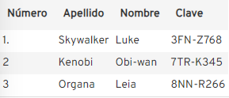
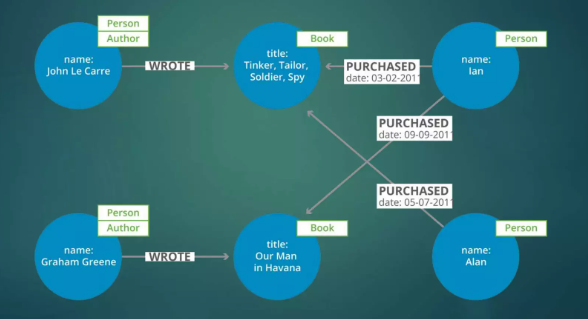

Concepto

Bases de datos documentales
Las bases de datos documentales, son un tipo de base de datos NoSQL que se especializa en el almacenamiento y la gestión de datos semiestructurados. A diferencia de las bases de datos relacionales tradicionales, que organizan los datos en tablas con filas y columnas fijas, las bases de datos documentales almacenan la información en documentos individuales, los cuales pueden tener una estructura flexible y variable.
Ejemplos populares de bases de datos documentales:
MongoDB:
Una de las bases de datos documentales más populares, conocida por su flexibilidad, escalabilidad y comunidad activa.
CouchDB:
Otra opción popular que destaca por su enfoque en la replicación de datos y la tolerancia a fallos.
RavenDB:
Una base de datos documental orientada a objetos que ofrece un modelo de programación familiar para desarrolladores de .NET.

Bases de datos clave-valor
Las bases de datos clave-valor, son un tipo de base de datos NoSQL que almacena datos en forma de pares clave-valor. Imagina un diccionario donde cada palabra es una clave y su definición es el valor. Las bases de datos clave-valor funcionan de manera similar.
Ejemplos populares de bases de datos clave-valor:
Redis:
Una base de datos clave-valor en memoria conocida por su alta velocidad y escalabilidad.
DynamoDB:
Un servicio de base de datos clave-valor ofrecido por Amazon Web Services (AWS)..
Cassandra DB:
Cassandra almacena los datos como almacenes clave-valor. Permite definir tablas mediante filas y columnas, pero la estructura tabular no se utiliza en el almacenamiento real.

Bases de datos Orientadas a columnas
En general, las bases de datos se orientan a filas. El sistema de gestión de base de datos (SGBD) crea una línea para cada entrada. Los campos con la información se listan uno tras otro. Un ejemplo clásico lo encontramos en las bases de datos relacionales. Las bases de datos columnares hacen lo contrario: por cada entrada, hay una columna, por lo tanto, los datos de cada entrada están dispuestos uno debajo del otro (y no uno al lado del otro, como en la variante orientada a filas).
Para clarificar, mostramos aquí el sistema orientado a filas:
La base de datos columnar gira la base de datos, quedando de esta forma:
Ejemplos populares de bases de datos Orientadas a columnas
ClickHouse:
Código abierto, optimizado para análisis analítico.
Apache Druid:
Código abierto, escalable para grandes conjuntos de datos.
Vertica:
Base de datos comercial con alta velocidad de consulta.

Bases de datos de grafos
Una base de datos de grafos es una colección sistemática de datos que enfatiza las relaciones entre las diferentes entidades de datos. La base de datos NoSQL utiliza la teoría matemática de grafos para mostrar las conexiones entre los datos. A diferencia de las bases de datos relacionales, que almacenan datos en estructuras de tablas rígidas, las bases de datos de grafos almacenan los datos como una red de entidades y relaciones. Como resultado, estas bases de datos suelen ofrecer un mejor rendimiento y flexibilidad, ya que son más adecuadas para modelar escenarios del mundo real.
¿Qué es un grafo?
El término “grafo” proviene del campo de las matemáticas. Un grafo contiene una colección de nodos y bordes.Nodos
Los nodos son vértices que almacenan los objetos de datos. Cada nodo puede tener un número y tipos de relaciones ilimitados.Bordes
Los bordes representan las relaciones entre los nodos. Por ejemplo, los bordes pueden describir relaciones entre elementos principales y secundarios, acciones o propiedad. Pueden representar relaciones tanto de uno a muchos como de varios a varios. Un borde siempre tiene un nodo inicial, un nodo final, un tipo y una dirección.Propiedades
Cada nodo tiene propiedades o atributos que lo describen. En algunos casos, los bordes también tienen propiedades. Los grafos con propiedades también se denominan grafos de propiedades. Ejemplos populares de bases de datos de grafos
Neo4j:
Una de las bases de datos de grafos más populares, de código abierto y con una comunidad activa.
OrientDB:
Base de datos de grafos de código abierto con características NoSQL adicionales.
Amazon Neptune:
Base de datos de grafos totalmente administrada ofrecida por Amazon Web Services (AWS).